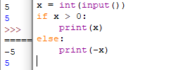

1. Целочисленная арифметика
Для целых чисел определены операции +, -, * и **. Операция деления / для целых чисел возвращает вещественное число (значение типа float). Также функция возведения в степень возвращает значение типа float, если показатель степени — отрицательное число.
Но есть и специальная операция целочисленного деления, выполняющегося с отбрасыванием дробной части, которая обозначается // (она соответствует операции div в Паскале). Она возвращает целое число: целую часть частного. Другая близкая ей операция − это операция взятия остатка от деления, обозначаемая % (она соответствует операции mod в Паскале). Например:

Код 1
2. Действительные числа
В этом разделе речь пойдет о действительных числах, имеющих тип float.
Обратите внимание, что если вы хотите считать с клавиатуры действительное число, то результат, возращаемый функцией input() необходимо преобразовывать к типу float:
Код 2
Действительные (вещественные) числа представляются в виде чисел с десятичной точкой (а не запятой, как принято при записи десятичных дробей в русских текстах). Для записи очень больших или очень маленьких по модулю чисел используется так называемая запись «с плавающей точкой» (также называемая «научная» запись). В этом случае число представляется в виде некоторой десятичной дроби, называемой мантиссой, умноженной на целочисленную степень десяти (порядок). Например, расстояние от Земли до Солнца равно 1.496·1011, а масса молекулы воды 2.99·10-23.
Числа с плавающей точкой в программах на языке Питон, а также при вводе и выводе записываются так: сначала пишется мантисса, затем пишется буква e, затем пишется порядок. Пробелы внутри этой записи не ставятся. Например, указанные выше константы можно записать в виде 1.496e11 и 2.99e-23. Перед самим числом также может стоять знак минус.
Напомним, что результатом операции деления / всегда является действительное число (float), в то время как результатом операции // является целое число (int).
Преобразование действительных чисел к целому производится с округлением в сторону нуля, то есть int(1.7) == 1, int(-1.7) == -1.
3. Библиотека math
Для проведения вычислений с действительными числами язык Питон содержит много дополнительных функций, собранных в библиотеку (модуль), которая называется math.
Для использования этих функций в начале программы необходимо подключить математическую библиотеку, что делается командой
import math
Например, пусть мы хотим округлять вещественные числа до ближайшего целого числа вверх. Соответствующая функция ceil от одного аргумента вызывается, например, так: math.ceil(x) (то есть явно указывается, что из модуля math используется функция ceil). Вместо числа x может быть любое число, переменная или выражение. Функция возращает значение, которое можно вывести на экран, присвоить другой переменной или использовать в выражении:
Код 3.1
Другой способ использовать функции из библиотеки math, при котором не нужно будет при каждом использовании функции из модуля math указывать название этого модуля, выглядит так:
Код 3.2
или так:
Код 3.3
Ниже приведен список основных функций модуля math. Более подробное описание этих функций можно найти на сайте с документацией языка Питон.
Некоторые из перечисленных функций (int, round, abs) являются стандартными и не требуют подключения модуля math для использования.
| Функция | Описание |
|---|---|
| Округление | |
int(x) |
Округляет число в сторону нуля. Это стандартная функция, для ее использования не нужно подключать
модуль math. |
round(x) |
Округляет число до ближайшего целого. Если дробная часть числа равна 0.5, то число округляется до ближайшего четного числа. |
round(x, n) |
Округляет число x
до n знаков после точки. Это стандартная функция, для ее использования не нужно подключать
модуль math. |
floor(x) |
Округляет число вниз («пол»), при этом floor(1.5) == 1, floor(-1.5) == -2 |
ceil(x) |
Округляет число вверх («потолок»), при этом ceil(1.5) == 2, ceil(-1.5) == -1 |
abs(x) |
Модуль (абсолютная величина). Это — стандартная функция. |
| Корни, логарифмы | |
sqrt(x) |
Квадратный корень. Использование: sqrt(x) |
log(x) |
Натуральный логарифм. При вызове в виде log(x, b) возвращает логарифм по основанию b. |
e |
Основание натуральных логарифмов e = 2,71828... |
| Тригонометрия | |
sin(x) |
Синус угла, задаваемого в радианах |
cos(x) |
Косинус угла, задаваемого в радианах |
tan(x) |
Тангенс угла, задаваемого в радианах |
asin(x) |
Арксинус, возвращает значение в радианах |
acos(x) |
Арккосинус, возвращает значение в радианах |
atan(x) |
Арктангенс, возвращает значение в радианах |
atan2(y, x) |
Полярный угол (в радианах) точки с координатами (x, y). |
degrees(x) |
Преобразует угол, заданный в радианах, в градусы. |
radians(x) |
Преобразует угол, заданный в градусах, в радианы. |
pi |
Константа π = 3.1415... |